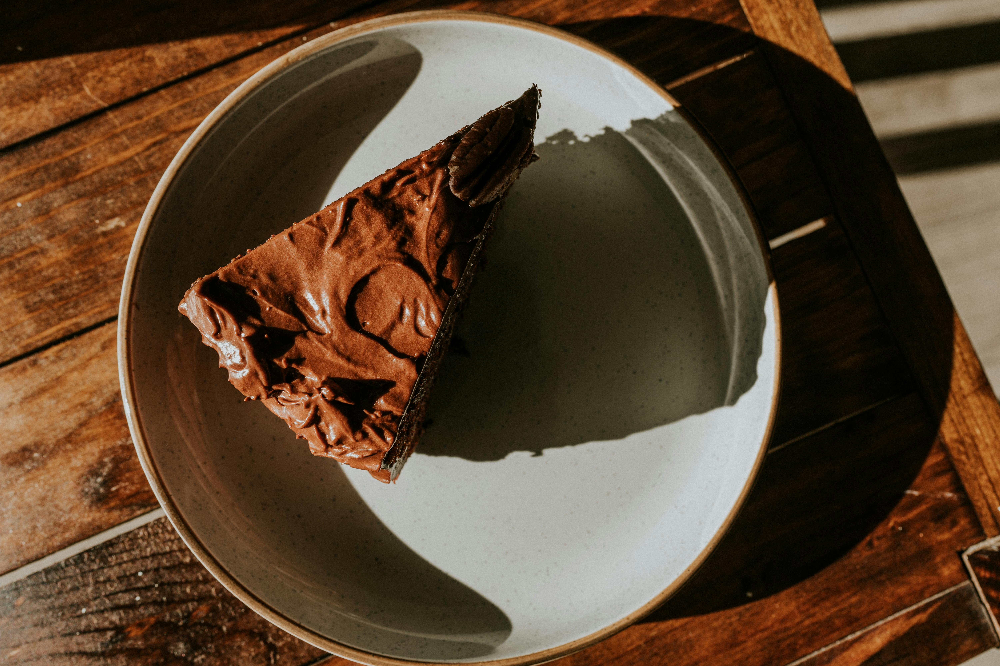

Homepage
Chocolate Mousse Pie

Description
The same time I was craving key lime pie (the recipe I eventually developed can be found here),
I was also craving something chocolatey. My grandmother has a great chocolate silk pie recipe,
and I wanted to put it head-to-head with something, so I found a chocolate mousse pie recipe that I modified a bit.
This recipe is extremely rich, dense, and delicious—you'll feel like you're eating a decadent cheesecake rather than a simple pie.
It's also a breeze to make. If you'd like to see the source recipe, it was taken from this Allrecipes recipe.
Ingredients
- Around 20 oreos, crushed
- 1/4 cup butter, softened
- 3 cups heavy cream, divided
- One 12oz package semi-sweet chocolate chips
- 1 tsp vanilla extract
- A pinch of salt
Steps
- Preheat the oven to 350 degrees F (175 degrees C). Generously grease a 9-inch springform pan with 2 3/4-inch sides.
- Make crust: Mix together crushed cookies and butter in a medium bowl until well combined. Press mixture evenly into the prepared pan.
- Bake crust for 5 minutes (you have some leniency here) then let cool.
- Make filling: Combine 1 cup cream, chocolate chips, vanilla, and salt in the top of a double boiler. Heat, stirring occasionally,
until chocolate is fully melted and mixture is smooth. Pour chocolate mixture into a large bowl; cool to room temperature, stirring occasionally.
- Beat 2 cups cream in a second large bowl until stiff peaks form. Fold into chocolate mixture until well combined. Pour mixture into cooled crust.
Chill pie in the refrigerator for at least 6 hours before topping and serving.
- (Optional) Make whipped topping from additional cream and either confectioner's or granulated sugar and pipe or cover pie in topping.